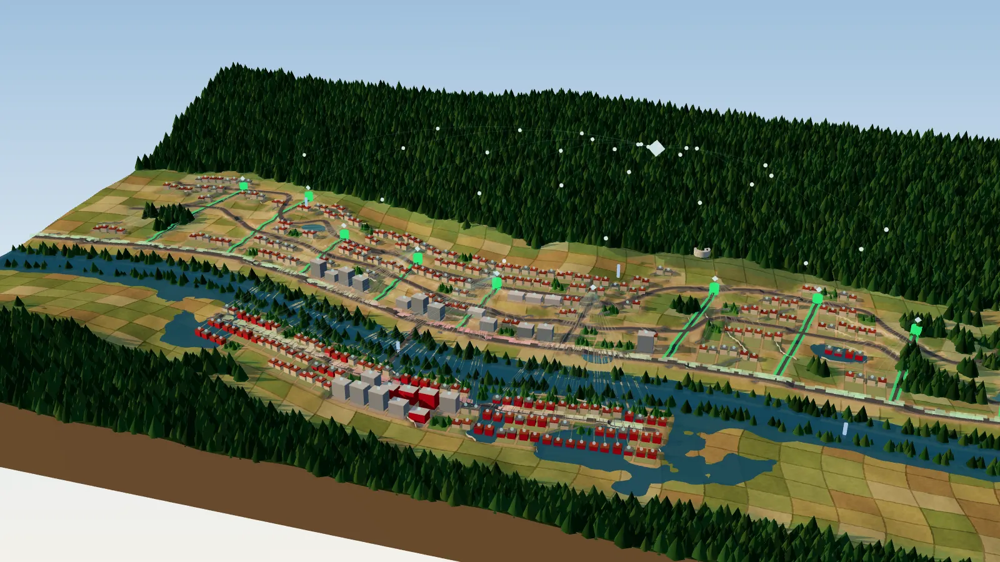

Predictive Disaster Management
The twin is used before an event, not only after it: forecasting a flood from rising rainfall, issuing evacuation routes, and testing how the city copes with an earthquake or fire.

Loading the city model
Simulated dataWhat this stage does
When rain gauges record rising intensity, a model combines rainfall, river levels, terrain, drainage capacity and past floods to forecast the flood extent. The twin shows affected buildings, closed roads and the safest routes to shelters before the water arrives. The same city can be put through an earthquake scenario to estimate damage building by building, or a fire scenario to test spread, engine access and hydrant coverage.
- Stage
- 6 of 6
- Status in my work
- Vision
Inputs
- Rainfall and river gauges
- Terrain and drainage model
- Flood history
- Building vulnerability data
- Road network and shelters
Outputs
- Forecast flood extent and affected assets
- Evacuation routes and shelters
- Earthquake damage estimates
- Fire spread and access analysis
How this connects to my work
Flood-susceptibility mapping and hazard analysis are part of my current work. A live forecasting twin is the long-term goal this website works toward; everything shown here is simulated.